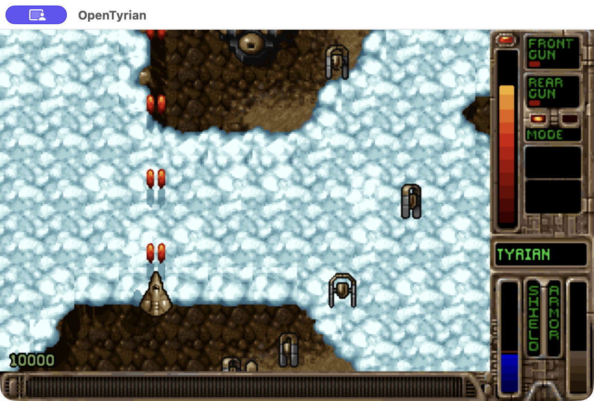
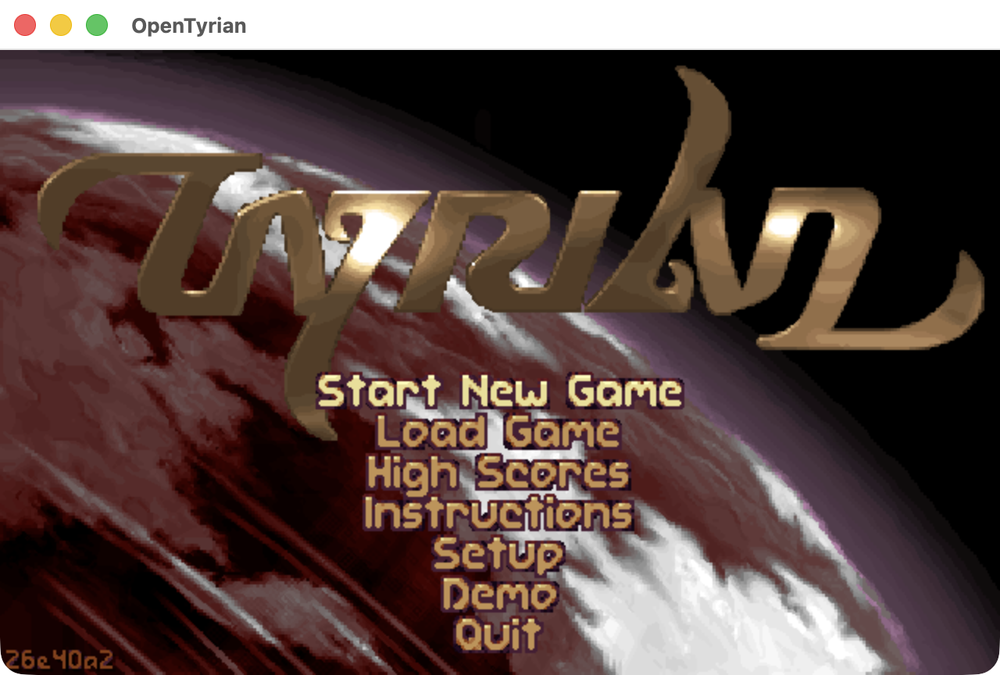
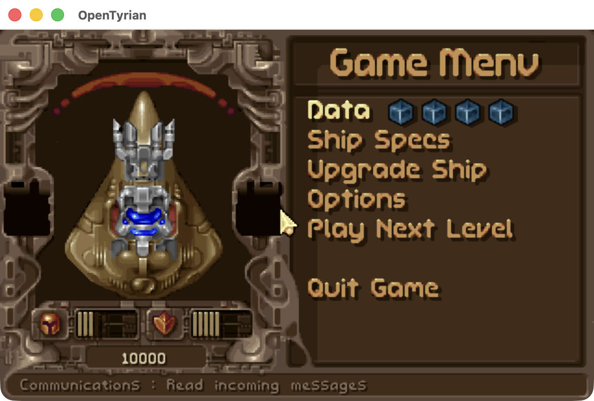
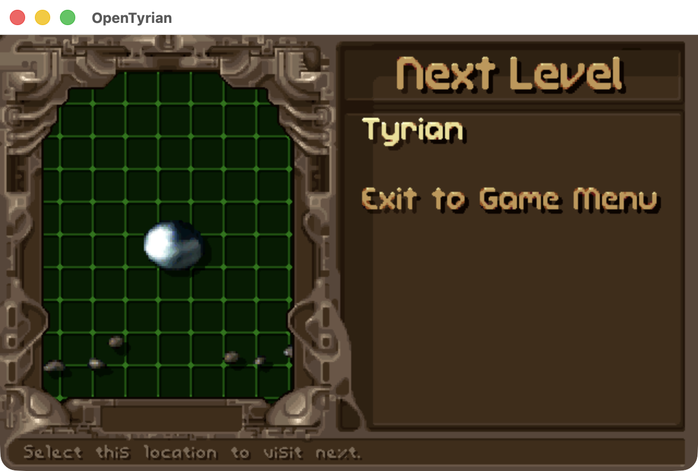
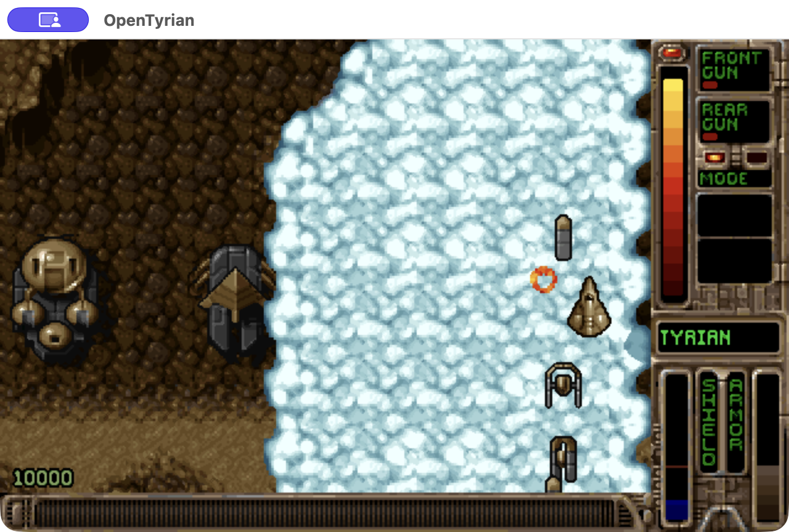
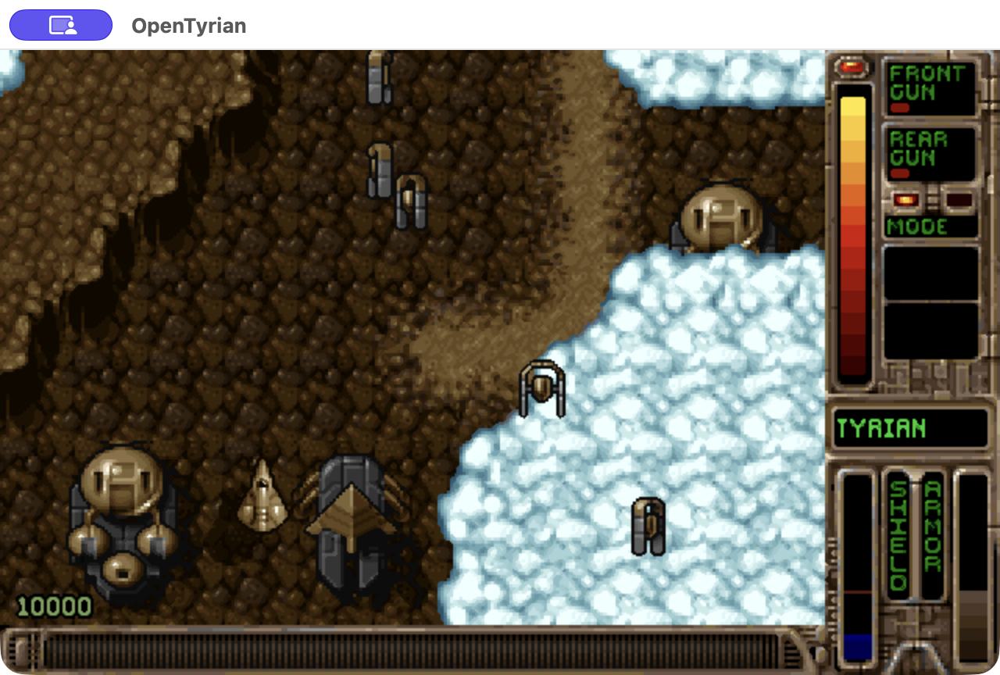
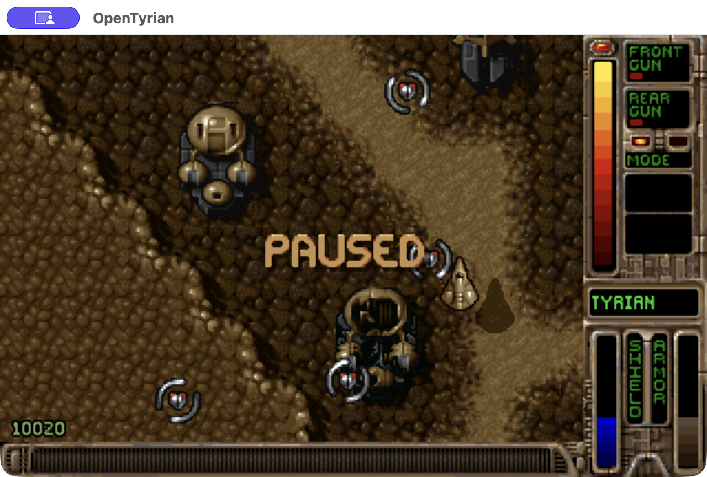

从源码到第一关：在 Apple 芯片 Mac 上重访 1995 年的《Tyrian》
《Tyrian》的音乐一响，我仿佛又成了那个逃学钻进电子游戏机厅的小男孩。那时候，光是电子乐里的鼓点和旋律，就能把我整个人吸进去。那些游戏里的战机在枪林弹雨里闪身腾挪，我坐在屏幕前，心里只惦记着再变强一点，好去挑战 Boss。对小时候的我来说，这就是最原始的快乐。
三十年后，我想看看《Tyrian》在今天的 Mac 上是什么样子。按住空格，两列红色炮弹从机头飞出去，掠过浅蓝色的云层。右侧的仪表上亮着第一关的名字 TYRIAN。屏幕上沿，macOS 的窗口标题栏里写着 OpenTyrian。

三十年前的关卡，今天的程序
《Tyrian》是 1995 年发行的 DOS 纵向卷轴射击游戏。原作的程序员 Jason Emery 后来把 2.1 版源码交给了 OpenTyrian 团队。团队把它从 Turbo Pascal 移植到 C，并用 SDL 处理窗口、输入和声音。这次在 Mac 上编译的就是这套引擎。关卡、画面和音乐仍来自《Tyrian》2.1，游戏数据可以免费下载。换句话说，引擎换了，内容没换。

做一个能从 Finder 打开的应用
我用一台 Apple 芯片 MacBook Air，系统是 macOS 26.3.1，编译器是 Apple Clang 17。构建打包、自动按键测试、截图录音和文字整理由 OpenAI Codex 协助完成；试玩和个人感受是我自己的。
这次的目标不是编出一个只能在终端里跑的程序，而是一个能从 Finder 双击打开、直接开玩的应用。
第一次尝试时，机器上装了 SDL2，却没有帮编译器定位它的 pkg-config。好在 Make 只需要 SDL2 的头文件位置和链接参数；打包脚本把这两样直接交给它，程序就编了出来。接下来要解决的，是让应用离开终端也能跑：SDL2、关卡和音乐都得装进应用包。
OpenTyrian 自带 Mac 打包脚本。在装有 Xcode 命令行工具的 Mac 上打开「终端」，依次运行下面几行，就能用和本文相同的源码版本构建并打开游戏。
git clone https://github.com/opentyrian/opentyrian.git
cd opentyrian
git checkout --detach 26e40a2012903812f16aae5dd6af2be50b96b5cb
./make_macos.sh
open build/OpenTyrian.app脚本默认会联网下载 SDL2 和游戏数据。这次我没有让它下载，而是用本地同一份素材：提前解压《Tyrian》2.1，再从 SDL 官方磁盘映像里取出 2.32.10 版的 SDL2.framework，放进源码目录的 build/vendor/，然后运行 ./make_macos.sh /path/to/tyrian21。路径要换成解压后含有 tyrian1.lvl 的那个文件夹。本次使用的打包脚本
在 Finder 里右键点按 OpenTyrian.app，选择「显示包内容」，就能找到游戏的各个部分。程序在 Contents/MacOS/opentyrian，SDL2 在 Contents/Frameworks/，第一章的关卡数据文件 tyrian1.lvl 和音乐文件 music.mus 都在 Contents/Resources/data/。
应用能打开还不够。我还想确认两件事：它是否真的同时包含两种架构，以及它是否带着自己的 SDL2，而不是依赖系统里碰巧装过的那一份。
lipo -archs build/OpenTyrian.app/Contents/MacOS/opentyrian
# 本次输出：x86_64 arm64
otool -arch arm64 -L build/OpenTyrian.app/Contents/MacOS/opentyrian第一条命令输出 x86_64 arm64：打包脚本把 Intel 和 Apple 芯片的版本合进了同一个程序，这次实际试玩的是 Apple 芯片版。第二条命令列出的 SDL2 路径以 @rpath 开头——脚本把搜索路径设在应用包自己的 Frameworks 文件夹里，所以移动整个应用后，它仍能找到随包携带的 SDL2。
最后的小插曲是图标。程序已经编好，生成图标时却报 Invalid Iconset。我用项目自带的 128 × 128 像素 PNG 重做了一个 ICNS，放回 Resources 文件夹，再对应用做一次本地临时签名。把压缩包解压到不同步的本地文件夹后，它能通过本地签名校验。这份构建未经 Apple 公证。
这次实测只到第一关。画面、声音、方向键、开火和暂停都跑通了；我没有打到通关，也没有记录帧率、输入延迟或 Boss 战。
先逛机库，再去 Tyrian
从标题菜单选 Start New Game，进入单人完整模式。出击前，战机停在机库里，金属机身占了左半边屏幕。想看看能换什么武器，就在右侧菜单里选 Upgrade Ship；想直接上场，就选 Play Next Level。

按回车进入星图，绿线网格标出了第一站 Tyrian。再按一次回车，行星退场，地表开始向下滚动。

用方向键躲闪，按住空格开火
下面两张转向截图来自自动按键测试：脚本让 macOS 向游戏窗口依次发送向右、向左的按键，不是手动操作时抓拍的。先按住右方向键，战机飞到右侧那片浅蓝色的云层上，靠近仪表。换成左方向键，它又回到画面左半边的褐色地表上空。地面一直在滚动，用右侧固定的仪表作参照，就能看清战机移动了多远。


按住空格，主炮就会连发。文首那两列炮弹，是空格键还按着的时候截到的。想喘口气，按一下 P，战场中央就会出现 PAUSED。再按一次，继续飞。

留下第一关的 16 秒声音
录音时绕了个弯。第一次用 macOS 的窗口录制接口采集游戏，录下来一片安静；系统却显示，OpenTyrian 正在往 MacBook Air 的内置扬声器送声音。游戏还停在第一关，于是改用 Core Audio 直接采集游戏进程的音频输出。
这段录音长 16 秒，保留了原始的 48 kHz 双声道。大约第 1 秒恢复游戏，第 3 秒按住空格开火，第 7 秒向左移动，第 8 秒再次开火，第 11 秒按下暂停。听的时候，可以跟着这两次开火找一找鼓点里的炮声。
录音结束，那阵鼓点还在耳边。
许多年后再看屏幕上那架小小的战机，忽然觉得我们和它挺像。一路飞来，有些炮火躲过去了，有些结结实实挨在身上。小时候想变强，是惦记着去挑战最后的 Boss。长大了也想变强，因为身边有想照顾的人，还有答应过别人、得好好做完的事。年少时觉得「使命」是个很大的词，如今才慢慢懂得，它也可以是这些平常的牵挂。
日子有时让人遍体鳞伤，可那阵鼓点一响，我还是喜欢这架小飞机，还是想陪它飞下去。要是能见到当年那个逃学钻进机厅的小男孩，我想坐到他旁边，说一句：「来，再打一局，咱们去见最后的 Boss。」过了这么多年，还能为同一件小事这样高兴，我想，这就是游戏留给我的美好。
延伸阅读 我在自己维护的 PocketPorts 整理了《Tyrian》在不同设备上的移植项目和安装说明。PocketPorts 的《Tyrian》项目页